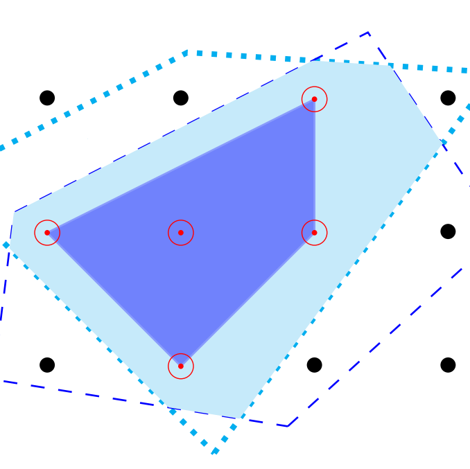
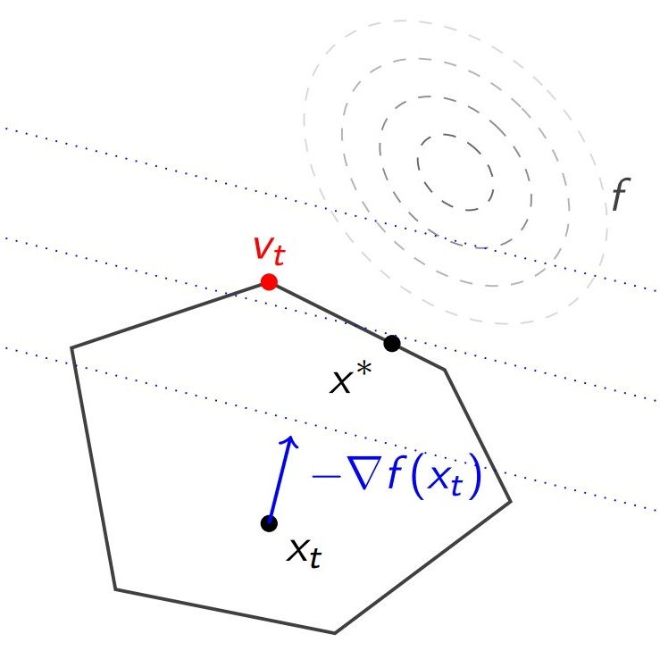
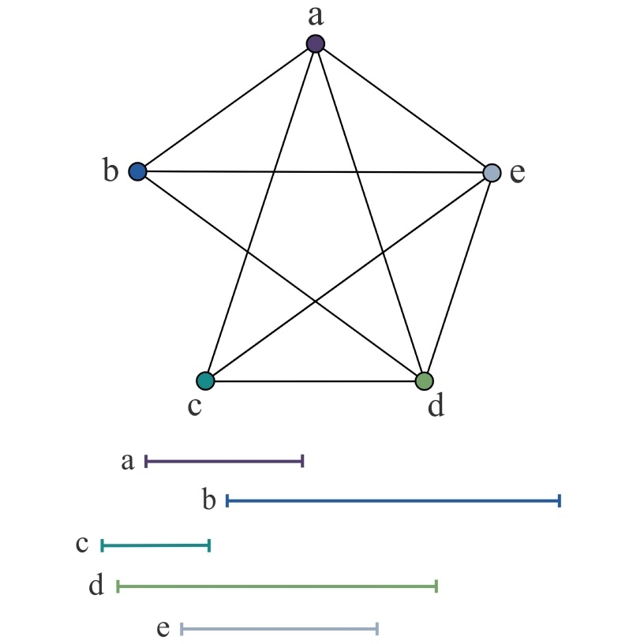
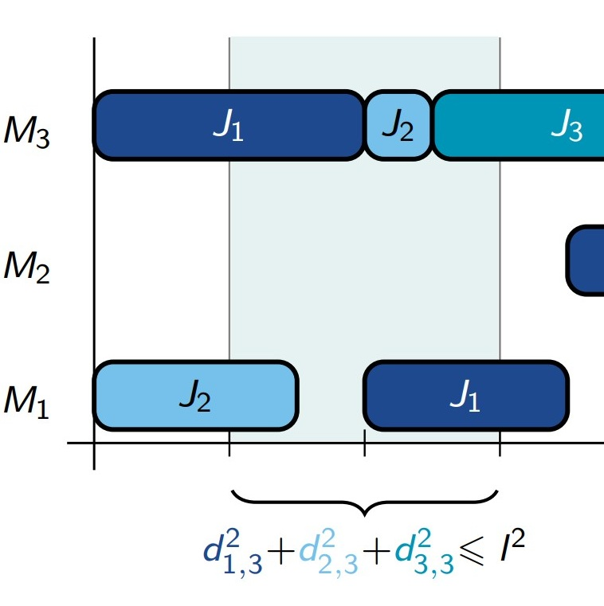

Marouane Felloussi
I am a 3rd year Ph.D. student at LIMOS Research Lab and Mines St-Etienne, and I am grateful to be advised by Xavier Delorme and Paolo Gianessi.
My research interests lie in combinatorial optimization and mixed-integer programming, with a particular focus on decomposition methods. Application areas include combinatorial optimization problems in production systems, such as scheduling and packing. I am also broadly interested in graph theory, and more recently, formal proof verification.
Papers
Under Review
-
Branch-and-Price for a variant of the Job-Shop Scheduling ProblemBranch-and-Price · Dynamic Programming · Strong Branching · Tree Search · Propagation
-
On the Steepest-Edge Rule for Column Generation over Integral Pricing PolytopesColumn Generation · Steepest-edge Rule · Integral Polytopes · Dinkelbach Algorithm · Frank-Wolfe Algorithm
-
Branch-and-Cut for Job-Shop Scheduling under Time-of-Use Pricing and Resource ConstraintsBranch-and-Cut · Minimal Covers · Valid Inequalities · Extremal Graphs · OR in Energy
Published
-
A Period-Indexed Model for Minimizing Energy Cost in a Job-Shop Scheduling ProblemInternational Conference on Operations Research and Enterprise Systems 2025 paperMixed-Integer Linear Programming · Valid Inequalities · OR in Energy
Conference and Workshop Talks
-
[27/05/2025]
ZIB-Siemens Workshop 2025, Berlin, Germany
“Decomposition approaches for Energy-Aware Scheduling” -
[26/02/2025]
ROADEF 2025, Paris, France
“A Branch-and-Cut Algorithm for Energy-Aware Job-Shop Scheduling” -
[23/02/2025]
ICORES 2025, Porto, Portugal
“A Period-Indexed Model for Job-Shop Scheduling under ToU pricing”
Event Attendance
- [25/11/2025] SCIP annual dev meeting, Berlin, Germany
- [01/08/2025] EuroMIP 2025, Clermont-Ferrand, France
- [16/09/2024] CO@Work 2024, Berlin, Germany
- [04/03/2024] ROADEF 2024, Amiens, France